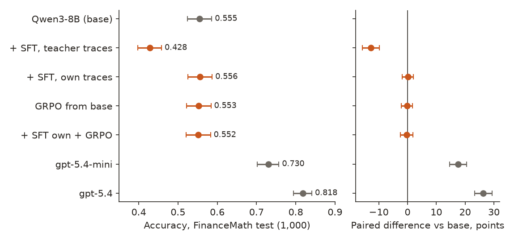
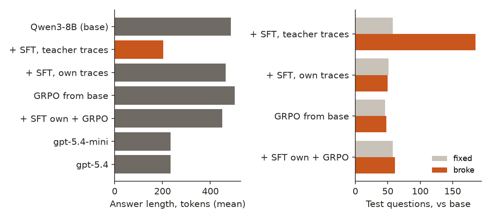
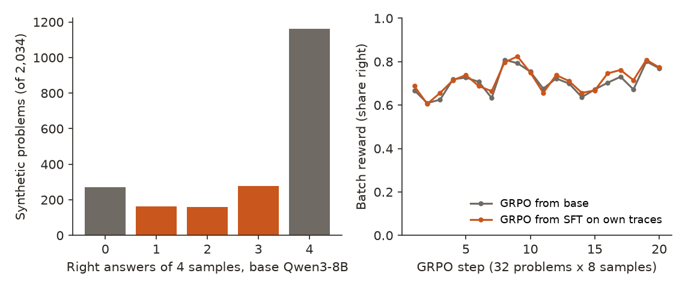

← Research·Experiments·
FinanceMath: an open model in a harness matches gpt-5.4 and beats gpt-5.4-mini
Training a small open model on graded finance problems is the cheap route to frontier accuracy that post-training services sell. This note runs that recipe end to end on a held-out benchmark for $31.80, scores every stage against the untrained model and two GPT models, and finds where it broke.
Correction, Nov 11, 2026: the first version said the teacher showed only a summary of its reasoning (“showed 278 of [972 tokens]; the rest was its hidden reasoning”). That was wrong. Tinker returned all 972 tokens, gpt-oss-120b’s full reasoning (its analysis channel) included; our own parser kept the 278-token final answer and dropped the rest. The −12.7-point SFT drop came from training on final answers only, a choice in our code, not from the teacher hiding its reasoning. The numbers are unchanged; sections 1, 4.3, 6, 7 and 10 are reworded.
Update, Nov 11, 2026: a rerun that trains on the teacher’s full reasoning, on problems the base model finds hard, beats the base on the test: 0.622 against 0.554 (+6.7 points [+4.6, +8.8]), and stays 10.8 points behind gpt-5.4-mini (section 4.6). The first run’s results below are unchanged.
Update 2, Nov 11, 2026: without training, an open-weight model reaches gpt-5.4: DeepSeek-V4-Flash in a harness (four reasoning answers and four executed programs, majority vote) scores 0.824 on the test against gpt-5.4’s 0.818 (+0.6 points [−1.5, +2.7]), with 8 calls per question at about a sixth of gpt-5.4’s price (section 4.7).
Next episode, Nov 12, 2026: the same open model in its thinking mode beats gpt-5.4 on the test: 0.885 against 0.818 (+6.7 points [+4.7, +8.7]), at less per question. See FinanceMath v2.

Summary: the short answer and the key results
In short
Can a few dollars of post-training make an open 8B model beat a cheap frontier model at finance math?
Not with this recipe. Qwen3-8B was trained with LoRA on 2,714 synthetic finance problems that a larger open model (gpt-oss-120b) wrote and checked, in three stages: supervised fine-tuning (SFT) on the teacher’s worked answers, SFT on Qwen’s own right answers, and reinforcement learning with the benchmark’s grader as the reward (GRPO). On the 1,000 held-out FinanceMath test questions the base model scores 0.555. SFT on the teacher’s answers drops it to 0.428 (−12.7 points); the other stages land within 0.3 points of base. gpt-5.4-mini scores 0.730 and gpt-5.4 0.818, 17 to 27 points above every Qwen system. Two things went wrong: we trained on the teacher’s final answers only (Tinker returned its full reasoning too, but our parser kept just the final answer), so the student learned to skip the work; and the synthetic problems were too easy (base Qwen already solves 73% of them), so learning from its own answers and from the grader had little to teach. Update, Nov 11: a rerun that trains on the teacher’s full reasoning, on problems the base model finds hard, lifts Qwen3-8B from 0.554 to 0.622 on the test (+6.7 points [+4.6, +8.8], four samples per question), still 10.8 points short of gpt-5.4-mini. Update 2: the best open-weight system we screened, DeepSeek-V4-Flash in a harness with no training, reaches gpt-5.4 on the test (0.824 against 0.818, +0.6 [−1.5, +2.7]) at $0.0007 a question.
Key results
| What we tested | Result | Compared with |
|---|---|---|
| Update 2: does an open-weight model, untrained, reach gpt-5.4? (1,000 test questions, one final answer per question) | It reaches it, not beats it: DeepSeek-V4-Flash in the harness 0.824 [0.800, 0.847], +0.6 points [−1.5, +2.7] vs gpt-5.4; +9.4 [+7.0, +11.8] vs gpt-5.4-mini | 8 calls per question, $0.00066 a question; gpt-5.4 one call, $0.0039 |
| Update, Nov 11: does training on the teacher’s full reasoning, on hard problems, beat the base? (1,000 test questions, 4 samples each) | Yes, by 6.7 points [+4.6, +8.8]: SFT then 10 steps of GRPO, 0.622 against 0.554; SFT alone +5.4 [+3.2, +7.5] | gpt-5.4-mini 0.730 (−10.8 [−13.2, −8.5]), gpt-5.4 0.818; both one call per question |
| Does any post-training stage beat base Qwen3-8B? (1,000 held-out test questions) | No. Best: SFT on its own answers 0.556, +0.1 points [−1.9, +2.1]; with GRPO on top 0.552, −0.3 [−2.4, +1.8]; GRPO from base 0.553, −0.2 [−2.1, +1.7] | Base Qwen3-8B 0.555 [0.524, 0.586] |
| Does it come near the GPT models? | No. The best post-trained system is 17.4 points behind gpt-5.4-mini [14.5, 20.4] and 26.2 behind gpt-5.4 [23.2, 29.3] | gpt-5.4-mini 0.730, gpt-5.4 0.818, at 3.6 and 12 times Qwen’s $0.0003 per question |
| What did SFT on the teacher’s answers do? | It cost 12.7 points [9.8, 15.7]: 0.428. It broke 185 test questions base got right and fixed 58; answers shrank from 486 to 204 tokens | The teacher (gpt-oss-120b) samples 972 tokens per answer; our parser kept only the 278-token final answer |
| Why did SFT on its own answers and GRPO do nothing? | The training problems were too easy. Base Qwen got all 4 of 4 samples right on 1,163 of 2,034 problems (57%); only 601 (30%) had a mix of right and wrong, the only ones that teach anything | On FinanceMath validation base Qwen scores 0.480; GRPO batch reward moved with batch difficulty, not with training |
| Was the sampler sending identical samples (a Tinker seed pitfall)? | No. Every multi-sample call was unseeded; 0 of 2,034 four-sample groups are identical, for the teacher or for Qwen | The FinQA pilot lost a run to it: a seed with 4 samples returned 4 copies |
01Introduction
A bond pays a €50 coupon for three years and €1,000 at the end; the spot rates are 6%, 7% and 8%. Base Qwen3-8B writes out each discount, gets the last cash flow as 1,050 / 1.259712 = 833.63, and answers 924.47: right. After training on 4,045 answers written by a model fifteen times its size, it writes the same three lines in a third of the space, works out 1,050 / 1.08³ in its head as 811.62 (it is 833.52), and answers 902.7: wrong. It learned to sound like its teacher without the arithmetic its teacher had done in the reasoning our parser cut away. That one question is most of this note.
What is known. Fine-tuning a small open model on a bigger model’s graded solutions, then reinforcing it with a reward from an automatic grader, is the standard recipe for domain reasoning: distillation and rejection sampling (Yuan et al., 2023), then GRPO (Shao et al., 2024). Finance is a common target, and FinanceMath (Zhao et al., 2024) is a hard held-out test for it: 1,200 college-level questions that need financial knowledge and often a table, on which GPT-4o scored 60.9% when it was published.
What is missing. FinanceMath has no training split, so any post-training needs synthetic data, and reports of “a small model beats a frontier one” rarely show each stage against the untrained model on the same questions, or what the run cost.
Does a $40 run of the standard recipe (teacher SFT, rejection sampling, GRPO with the grader) make Qwen3-8B better than its base, and better than gpt-5.4-mini, on the 1,000 held-out FinanceMath test questions?
What this note does. Its contributions:
- A negative result with every stage measured: base, teacher SFT, rejection-sampling SFT, GRPO from base and from SFT, each on the same 1,000 test questions, paired, beside gpt-5.4-mini and gpt-5.4.
- The cause of the one large effect: SFT on a reasoning model’s final answers without its reasoning (which our parser dropped) teaches the student to skip the work (−12.7 points).
- A check of the training data’s difficulty that explains the flat stages, and what a recipe with a chance would need and cost.
- The code, the 2,714 verified synthetic problems and every graded answer.
What would count as an answer. Set before the test runs:
- Checkpoints are chosen on the 200 validation questions only; each final system runs on the test once.
- A stage “helps” only if its paired difference against base Qwen3-8B on the same test questions has an interval above zero.
- “Beats gpt-5.4-mini” needs the same: a paired interval above zero, not overlapping accuracies.
- The grader is checked first: it must mark every gold answer right.
02Setup
2.1 Post-training 101, for software engineers
- LoRA trains a small add-on to the model’s weights (here rank 32) instead of all 8 billion of them: like shipping a patch rather than a new build. The base model is untouched, so “base” is always one switch away.
- SFT (supervised fine-tuning) shows the model a question and a correct answer and trains it to write that answer, token by token. Whatever the answers look like (long or short, careful or terse) is what it learns.
- Best-of-N with a grader samples N answers per problem and keeps the right ones. With the teacher’s answers it is distillation; with the student’s own answers it is rejection sampling: the student learns from its own best days.
- GRPO is reinforcement learning without a learned reward model: sample 8 answers to a problem, score each with the grader (1 right, 0 wrong), and push up the ones above the group’s average. A group where all 8 are right, or all wrong, has no average to beat and teaches nothing.
- Reasoning models show two texts. gpt-oss-120b writes its working in an analysis channel and then a final answer (model card). Only the final answer was used as a training trace here, which turned out to matter (section 4.3).
2.2 Benchmark and grader
FinanceMath questions are short exam problems (“what is the maximum profit of this bull call spread?”), many with a markdown table, across seven areas from accounting to derivatives. Each has an expert-written Python solution; the released gold is its output rounded to 3 decimals. The grader is a port of the official comparison: a prediction is right if it is within 0.15% of the gold, or matches after a power-of-ten rescale (4.3% matches 0.043), or rounds to the same 3 decimals; the sign is not checked. One deviation: a prediction may also match the reference solution’s unrounded value, because the rounded gold alone fails precise answers (38 of the 1,200 reference solutions fail against it). The official evaluation reads the answer with a language model; here it is read from a final ANSWER: line. The grader marks 100% of the gold answers right (test_fm_grader.py).
2.3 Data: what each set was used for
| Set | What it is | Size | Used for |
|---|---|---|---|
| Synthetic, generated | CFA-style problems with a Python solution, written by gpt-oss-120b, 5 per call over 44 subtopics; the executed solution is the gold | 3,480 | The pool for verification |
| Synthetic, verified | Kept when gpt-oss-120b, solving blind with the benchmark prompt, matched the gold; one dropped as too similar to a benchmark question (TF-IDF ≥ 0.6) | 2,714 | All training; data/synth.jsonl |
| SFT split | 75% of the verified problems, by a hash of the id | 2,034 | Teacher and own-answer SFT |
| RL split | The other 25%, never seen by SFT | 680 | GRPO |
| FinanceMath validation | The benchmark’s validation split | 200 | Choosing every checkpoint |
| FinanceMath test | The benchmark’s test split, gold public since July 2026 | 1,000 | Run once per final system |
2.4 Models
Student: Qwen3-8B (Apache-2.0) in its non-thinking mode, greedy at evaluation; its thinking mode scored lower on validation (0.390 against 0.480; 72 of 200 answers hit the 2,048-token limit). Teacher: gpt-oss-120b on Tinker at medium reasoning effort, which scored 0.62 on 50 validation questions at $0.0009 per question (qwen3.5-397b scored 0.68 at 50 times the price). Rivals: gpt-5.4-mini and gpt-5.4 through the OpenAI API at their default settings, with the same prompt and grader.
03How the study was run
- Grader ported and checked on every gold answer (12 tests). Baselines on validation: Qwen3-8B (two modes), gpt-5.4-mini, gpt-5.4; teacher candidates on 50 questions.
- Synthetic data: about 700 generation calls (3,480 problems, $2.22), each solution executed in an isolated Python process; blind verification of 3,470 ($3.16), 2,714 kept.
- Teacher best-of-4: 3 more teacher samples per SFT problem (temperature 1.0), graded; with the verification answer, up to 4 right answers per problem ($4.71).
- Teacher SFT: up to 2 distinct right teacher answers per problem, shortest first: 4,045 traces, 2 epochs, 254 steps. Validation: epoch 1 0.355, epoch 2 0.345, against 0.480 for base.
- Own-answer SFT (added after step 4 failed): 4 Qwen samples per SFT problem at temperature 0.8, graded; the shortest right one per problem: 1,764 traces, 2 epochs. Validation: 0.500 and 0.475.
- GRPO, 20 steps of 32 RL problems × 8 samples, learning rate 2e-5, reward = the grader; once from base, once from own-answer SFT epoch 1; checkpoints every 5 steps, all 8 scored on validation.
- Test, once per final system: base Qwen3-8B, the four chosen checkpoints, gpt-5.4-mini and gpt-5.4: 7,000 graded answers.
| Fixed before any test run | Changed after reading results |
|---|---|
| The grader; the splits and which set decides what; the checkpoint rule (highest validation accuracy, ties to the earlier one); LoRA rank 32, SFT learning rate 1e-4, batch 32; the teacher and its prompt; paired bootstrap intervals; the $40 cap | Own-answer SFT and GRPO from base were added after teacher SFT lost 13 points on validation. GRPO was kept to 20 steps for cost. The two GPT test runs were made after the others, once the OpenAI key had credit again (a first attempt returned only errors and was discarded). No size of gain was set in advance. |
Conditions: greedy decoding at evaluation, up to 2,048 output tokens; training and sampling on Tinker; every multi-sample call unseeded (section 4.5). Spend: $31.80 at list prices (Tinker $25.62, OpenAI $6.18), failed and discarded runs included.
04Results
Five findings:
- 4.1 No post-training stage beats the base model on the test.
- 4.2 Every Qwen system is 17 to 27 points behind the GPT models.
- 4.3 SFT on the teacher’s final answers alone taught the student to skip the work.
- 4.4 The synthetic problems were too easy for the other stages to teach anything.
- 4.5 The boring explanations (a sampler bug, a grader quirk, a lucky split) do not account for it.
- 4.6 Update: training on the full reasoning of hard problems beats the base by 7 points, not gpt-5.4-mini.
- 4.7 Update 2: an open-weight model in a harness reaches gpt-5.4 without training.
4.1 No post-training stage beats the base model on the test
On the 1,000 held-out test questions base Qwen3-8B scores 0.555. SFT on the teacher’s answers scores 0.428 (−12.7 points [−15.7, −9.8]); SFT on its own answers 0.556 (+0.1 [−1.9, +2.1]); GRPO from base 0.553 (−0.2 [−2.1, +1.7]); own-answer SFT then GRPO 0.552 (−0.3 [−2.4, +1.8]). None passes the bar of an interval above zero (Figure 1). Validation, which chose the checkpoints, told the same story with wider intervals: teacher SFT 12.5 points below base, the rest within 3 points of it.
| Stage (checkpoint chosen on validation) | Validation (200) | Test (1,000) | vs base, test (points) | Fixed / broke vs base |
|---|---|---|---|---|
| Base Qwen3-8B | 0.480 | 0.555 [0.524, 0.586] | — | — |
| + SFT on teacher answers (epoch 1; epoch 2: 0.345) | 0.355 | 0.428 [0.398, 0.458] | −12.7 [−15.7, −9.8] | 58 / 185 |
| + SFT on own right answers (epoch 1; epoch 2: 0.475) | 0.500 | 0.556 [0.525, 0.587] | +0.1 [−1.9, +2.1] | 51 / 50 |
| GRPO from base, 20 steps (step 15; steps 5, 10, 20: 0.465, 0.475, 0.485) | 0.485 | 0.553 [0.522, 0.584] | −0.2 [−2.1, +1.7] | 46 / 48 |
| Own-answer SFT + GRPO, 20 steps (step 20; steps 5 to 15: 0.495) | 0.510 | 0.552 [0.521, 0.583] | −0.3 [−2.4, +1.8] | 58 / 61 |

results/runs/.The flat stages are not still water: own-answer SFT fixed 51 questions and broke 50, GRPO from base fixed 46 and broke 48. Training moved answers around without moving the total.
4.2 Every Qwen system is 17 to 27 points behind the GPT models
gpt-5.4-mini scores 0.730 [0.702, 0.757] and gpt-5.4 0.818 [0.794, 0.841]. Paired on the same questions, the best post-trained Qwen (own-answer SFT, 0.556) is 17.4 points [14.5, 20.4] behind gpt-5.4-mini and 26.2 [23.2, 29.3] behind gpt-5.4; with GRPO on top, 17.8 [14.8, 20.8] and 26.6 [23.6, 29.6].
| System | Test accuracy | Best post-trained minus this (points) | $ per question | Answer tokens |
|---|---|---|---|---|
| gpt-5.4 | 0.818 [0.794, 0.841] | −26.2 [−29.3, −23.2] | 0.0039 | 234 |
| gpt-5.4-mini | 0.730 [0.702, 0.757] | −17.4 [−20.4, −14.5] | 0.0012 | 234 |
| Qwen3-8B, own-answer SFT | 0.556 [0.525, 0.587] | — | 0.0003 | 464 |
| Qwen3-8B, base | 0.555 [0.524, 0.586] | +0.1 [−1.9, +2.1] | 0.0003 | 486 |
Qwen costs about a quarter of gpt-5.4-mini per question at list prices. The gap is widest in derivatives (base Qwen 0.472 against gpt-5.4-mini 0.653 on 303 questions) and portfolio management (0.472 against 0.681 on 72), areas where knowing the definition (a spread’s payoff, a fee’s base) decides the answer.
4.3 SFT on the teacher’s final answers alone taught the student to skip the work
The teacher, gpt-oss-120b, sampled 972 tokens per answer during verification: its reasoning in the analysis channel, then a 278-token final answer. Tinker returned all of them; our parser kept only the final answer. Trained on 4,045 of those final answers, Qwen3-8B’s answers shrank from 486 to 204 tokens on the test, and it broke 185 questions the base model got right while fixing 58. The teacher answers were right (they were graded), but cut off from their reasoning they were summaries: a formula and the numbers, written by a model that had already checked them. Copying the summary without the checking is what the bond question in the introduction shows (Figure 2).

Short answers are not wrong in themselves: gpt-5.4-mini answers in 234 tokens and scores 0.730. The difference is where the work happens. A reasoning model can afford a terse final answer because the checking happened before it, in its analysis channel; we trained the 8B model on the final answers without that channel, so the teacher’s style taught it to leave the checking out. The explorer shows three test questions and one training problem.
Question (test-63, Asset Classes & Derivatives): A financier is interested in establishing a bull call spread with the next options: a call option with a strike price of $35 that costs $12.65, and a call option with a strike price of $40 priced at $8.85. What is the maximum profit that can be made from this bull call spread? Gold: 1.2
broken: after SFT the model states a wrong rule in one line and does not check it.
Base Qwen3-8B: 1.200 right
To solve this finance problem, we need to understand the concept of a **bull call spread** and how to calculate its **maximum profit**.
---
### Step 1: Understand the Bull Call Spread
A **bull call spread** is a **limited-risk, limited-reward** options strategy that involves:
- **Buying a call option** with a **lower strike price** (in this case, $35).
- **Selling a call option** with a **higher strike price** (in this case, $40).
This strategy is used when the investor expects the underlying asset to rise in value, but not by a large amount.
---
### Step 2: Determine the Net Cost of the Spread
- Cost of the **lower strike call** (buying): $12.65
- Premium received from the **higher strike call** (selling): $8.85
So, the **net cost** of the spread is:
$$
\text{Net Cost} = \text{Cost of lower strike call} - \text{Premium received from higher strike call}
$$
$$
\text{Net Cost} = 12.65 - 8.85 = 3.80
$$
---
### Step 3: Determine the Maximum Profit
The **maximum profit** in a bull call spread occurs when the underlying asset price is **equal to or above the higher strike price** (i.e., $40 or more).
At this point:
- The **lower strike call** is **in the money**.
- The **higher strike call** is **also in the money**, but the **premium received** offsets the cost.
The **maximum profit** is the **difference between the strike prices** minus the **net cost** of the spread.
$$
\text{Maximum Profit} = (\text{Higher strike} - \text{Lower strike}) - \text{Net Cost}
$$
$$
\text{Maximum Profit} = (40 - 35) - 3.80 = 5 - 3.80 = 1.20
$$
---
### Final Answer:
$$
\boxed{1.200}
$$
ANSWER: 1.200After SFT on teacher traces: 0 wrong
The bull call spread profit is
\[
\text{Profit}= \text{Premium received} - \text{Premium paid}
= 8.85 - 12.65 = -3.80
\]
Since the spread is long the lower‑strike call and short the higher‑strike call, the maximum profit occurs when the underlying price is at the higher strike (\$40). At that point the lower‑strike call is in the money and the higher‑strike call is at the money, giving a net payoff of \$0.
Thus the maximum profit that can be made from this bull call spread is **\$0**.
ANSWER: 0Question (test-60, Quantitative Analysis & Valuation): What is the worth of a bond that has a face value of EUR 1,000, a three-year maturity period, and annually pays a 5% coupon? Please note the following spot rate curve: 1-year, 6%; 2-year, 7%; and 3-year, 8%. Gold: 924
broken: the right method, but 1,050 / 1.08³ worked out in its head as 811.62 (it is 833.52).
Base Qwen3-8B: ANSWER: 924.47 right
To determine the **worth of the bond**, we need to **discount each of its future cash flows** using the **spot rates** provided. The bond has:
- **Face value (FV)** = EUR 1,000
- **Coupon rate** = 5% annually
- **Maturity** = 3 years
- **Spot rates**:
- 1-year: 6%
- 2-year: 7%
- 3-year: 8%
---
### Step 1: Calculate the annual coupon payment
The bond pays a 5% coupon annually on a face value of EUR 1,000:
$$
\text{Coupon} = 1,000 \times 0.05 = 50 \text{ EUR}
$$
So, the bond pays **EUR 50** each year for 3 years, and **EUR 1,050** at maturity (the final coupon + face value).
---
### Step 2: Discount each cash flow using the spot rates
We discount each cash flow using the spot rate corresponding to its time to maturity.
- **Year 1 cash flow**: EUR 50
$$
\text{PV}_1 = \frac{50}{(1 + 0.06)} = \frac{50}{1.06} \approx 47.17
$$
- **Year 2 cash flow**: EUR 50
$$
\text{PV}_2 = \frac{50}{(1 + 0.07)^2} = \frac{50}{1.1449} \approx 43.67
$$
- **Year 3 cash flow**: EUR 1,050
$$
\text{PV}_3 = \frac{1,050}{(1 + 0.08)^3} = \frac{1,050}{1.259712} \approx 833.63
$$
---
### Step 3: Add up the present values
$$
\text{Bond Value} = 47.17 + 43.67 + 833.63 = 924.47
$$
---
### Final Answer:
**ANSWER: 924.47**After SFT on teacher traces: 902.7 wrong
The bond pays a 5 % coupon each year, i.e. €50, and the face value €1,000 at maturity.
Discount each cash flow with the appropriate spot rate:
- Year 1: \( \frac{50}{1.06}=47.17\)
- Year 2: \( \frac{50}{(1.07)^2}=43.87\)
- Year 3: \( \frac{1050}{(1.08)^3}=811.62\)
Summing the present values:
\[
47.17 + 43.87 + 811.62 \approx 902.66
\]
Thus the bond’s worth today is about **€902.7**.
**ANSWER: 902.7**Question (test-41, Corporate & Securities Issuance): A business is pondering on the idea of transitioning from a completely equity-based capital structure to a capital structure comprising of equal parts of equity and debt, keeping assets constant. This alteration would decrease the net income by 30%. If the present return on equity (ROE) is 10%, what would the ROE be with the suggested capital structure? Gold: 14
fixed: the short answer gets this one right where the base model halved the ratio.
Base Qwen3-8B: 7.00 wrong
To solve this problem, we need to understand how the change in capital structure affects the return on equity (ROE). Here's the step-by-step reasoning:
---
### **Step 1: Understand the current situation**
- The current capital structure is **equity-only**.
- The current **ROE** is **10%**.
- This means that the **net income (NI)** is **10% of total equity (E)**:
$$
\text{ROE} = \frac{\text{Net Income (NI)}}{\text{Equity (E)}} = 10\%
$$
---
### **Step 2: Understand the new capital structure**
- The business is transitioning to a **capital structure with equal parts equity and debt**.
- This means **debt (D)** is now **equal to equity (E)**.
- Since the **assets (A)** remain constant, and assets = equity + debt:
$$
A = E + D \Rightarrow A = E + E = 2E \Rightarrow E = \frac{A}{2}
$$
---
### **Step 3: Understand the effect on net income**
- The problem states that the **net income decreases by 30%** due to the capital structure change.
- So, the new net income (NI') is:
$$
\text{NI'} = \text{NI} \times (1 - 0.30) = 0.70 \times \text{NI}
$$
---
### **Step 4: Calculate the new ROE**
- The new ROE is:
$$
\text{ROE'} = \frac{\text{NI'}}{\text{New Equity (E')}}
$$
- Since the new capital structure is **equal parts equity and debt**, the **new equity is half of the total assets**:
$$
E' = \frac{A}{2} = E
$$
- So, the new ROE is:
$$
\text{ROE'} = \frac{0.70 \times \text{NI}}{E}
$$
- From the original ROE:
$$
\text{ROE} = \frac{\text{NI}}{E} = 10\%
$$
- Therefore:
$$
\text{ROE'} = 0.70 \times \text{ROE} = 0.70 \times 10\% = 7.00\%
$$
---
### **Final Answer:**
$$
\boxed{7.00}
$$
**ANSWER: 7.00**After SFT on teacher traces: 14% right
The net income falls by 30 % so the new net income is
\[
\text{NI}_{\text{new}} = 0.70 \times \text{NI}_{\text{old}}.
\]
With assets unchanged, the new equity is half the original equity (since debt is added equal to equity).
\[
\text{Equity}_{\text{new}} = 0.50 \times \text{Equity}_{\text{old}}.
\]
Return on equity (ROE) is
\[
\text{ROE}_{\text{new}} = \frac{\text{NI}_{\text{new}}}{\text{Equity}_{\text{new}}}
= \frac{0.70\,\text{NI}_{\text{old}}}{0.50\,\text{Equity}_{\text{old}}}
= 1.40 \times \frac{\text{NI}_{\text{old}}}{\text{Equity}_{\text{old}}}
= 1.40 \times \text{ROE}_{\text{old}}.
\]
Given the original ROE is 10 %:
\[
\text{ROE}_{\text{new}} = 1.40 \times 10\% = 14\%.
\]
**ANSWER: 14%**Synthetic problem (s1-4, Accounting): A company currently reports taxable income of $50,000 using FIFO. If it switches to LIFO, its cost of goods sold would increase by $8,000, reducing taxable income accordingly. The corporate tax rate is 21%. What is the after‑tax cash‑flow benefit of making the switch? Gold: 1680
what the two SFT runs learned from: the teacher's visible answer, and Qwen3-8B's own shortest right answer.
Teacher (gpt-oss-120b), final answer (what SFT trained on)
The $8,000 increase in COGS lowers taxable income by $8,000. Tax saved = 21 % × $8,000 = $1,680. This tax saving is the additional cash flow from the switch. **ANSWER: 1680**
Qwen3-8B’s own shortest right answer
To determine the **after-tax cash-flow benefit** of switching from FIFO to LIFO, we need to follow these steps: --- ### **Step 1: Understand the impact on taxable income** - Current taxable income using FIFO: **$50,000** - If the company switches to LIFO, **cost of goods sold (COGS) increases by $8,000** - This means **taxable income decreases by $8,000** - New taxable income = $50,000 - $8,000 = **$42,000** --- ### **Step 2: Compute the tax savings** - Corporate tax rate = **21%** - Tax savings = (Decrease in taxable income) × tax rate = $8,000 × 0.21 = **$1,680** --- ### **Step 3: Determine the after-tax cash-flow benefit** - The tax savings of $1,680 represents an **after-tax cash-flow benefit**, since taxes are paid on the reduced income. --- ### **Final Answer:** ANSWER: 1680
Replies as generated (greedy, the benchmark prompt), graded by the official FinanceMath rule. Source: results/explorer.json, written by make_explorer.py.
The training loss shows the same thing from the other side: on teacher answers it fell from 1.14 to 0.18 (a new style to copy); on Qwen’s own answers it stayed between 0.11 and 0.14 (its own style, nothing new to copy).
4.4 The synthetic problems were too easy for the other stages to teach anything
Sampled 4 times on each of the 2,034 SFT problems, base Qwen3-8B got all 4 right on 1,163 (57%) and none right on 270 (13%); only 601 (30%) had a mix. On FinanceMath validation the same model scores 0.480; on the synthetic problems its single-sample accuracy is 0.734. Own-answer SFT therefore trained mostly on problems the model already solved every time, and GRPO, which learns only from mixed groups, found 8 to 19 of its 32 problems per step with any signal (Figure 3).

training in summary.json; drawn by make_figures.py.The two GRPO curves rise and fall together because both runs saw the same 32 problems at each step: the batch reward tracks how hard that step’s problems were, not what the model learned. The generator wrote CFA-style drills (“compute the duration of this bond”); FinanceMath asks for the same knowledge in messier wording, often with a table and a distractor. Problems an 8B model already solves teach it nothing new.
4.5 The boring explanations do not account for it
- Identical samples. On Tinker, a sampling call with a seed and several samples returns the same sample several times; the FinQA pilot behind episode 1 lost a run to it, which turns best-of-4 into best-of-1 and leaves every GRPO group without signal. Here every multi-sample call was unseeded, and 0 of 2,034 four-sample groups are identical, for the teacher or for Qwen (
identical_sample_setsin summary.json). - A grader that punishes short answers. The teacher-trained model’s answers parse: 1 of 1,000 test answers has no number, against 4 for base. Its errors are wrong values (the explorer’s spread and bond).
- Wrong teacher answers. Every teacher trace used for SFT was graded right against the executed gold; 95.2% of the extra teacher samples were right.
- A lucky or unlucky split. Test is easier than validation for every system (base 0.480 on validation, 0.555 on test), which is why every comparison is paired on the same questions; both sets put teacher SFT far below base and the other stages within noise of it.
4.6 Update (Nov 11): training on the full reasoning of hard problems beats the base by 7 points, not gpt-5.4-mini
The rerun changes the two things sections 4.3 and 4.4 blamed, and nothing else about the student:
- The teacher’s full reasoning. gpt-oss-120b, served by an inference provider through Hugging Face’s router, returns its analysis channel with every answer. Each training example is that reasoning followed by the final answer, written as visible working in Qwen3’s non-thinking format, so every example has the format the evaluation prompt asks for.
- Hard problems only. 1,048 new benchmark-shaped problems (a short case with an exhibit table, extra rows and market conventions) plus the first run’s drills, kept when base Qwen3-8B got at most 2 of 4 samples right: 1,527 problems, 1,232 for SFT and 295 held out for GRPO. Base Qwen got none of 4 right on 709 of the 1,048 new ones.
- Verified traces. 2 teacher samples per problem, 2 more where neither was right: 3,438 samples, 41% right against the executed gold. Training used up to 2 right traces per problem: 1,426 examples on 840 problems (1,355 train, 71 held back for the loss), about 2,000 tokens each.
Training: the same LoRA as before (rank 16 on every linear layer), learning rate 2×10⁻⁵, effective batch 16, 2 epochs (170 steps, 25 minutes on one H100); validation loss 0.892 → 0.466. Then GRPO from that adapter: 40 steps of 8 held-out problems × 8 samples at temperature 1.0, reward 1 only for a parsed, right answer that stops before 4,096 tokens, so loops earn nothing; checkpoints every 10 steps.
A fixed protocol, set before the gate was run. The trained model writes out its working (about 1,100 tokens per answer against 500 for base), and under greedy decoding it looped on 14 of 200 validation questions until the length cap. So every comparison in this update uses Qwen3’s recommended non-thinking sampling (temperature 0.7, top-p 0.8, top-k 20, no repetition penalty), 4 samples per question, up to 6,144 tokens, and reports the mean accuracy over the 4 samples, paired over questions, with the majority of 4 and the share of samples that hit the cap as secondary numbers. The checkpoint was chosen on validation only, by mean accuracy; the test was then run once.
| System (4 samples per question) | Validation (200) | Test (1,000) | vs base, test (points) | Majority of 4, test | Hit the cap, test |
|---|---|---|---|---|---|
| Base Qwen3-8B | 0.484 | 0.554 [0.527, 0.582] | — | 0.583 | 0.2% |
| + SFT on the full-reasoning traces | 0.576 | 0.608 [0.582, 0.634] | +5.4 [+3.2, +7.5] | 0.646 | 1.4% |
| + GRPO, 10 steps (chosen on validation: 0.595; steps 20, 30, 40: 0.548, 0.581, 0.575) | 0.595 | 0.622 [0.596, 0.647] | +6.7 [+4.6, +8.8] | 0.665 | 2.3% |
Against the bar, on the same 1,000 test questions: gpt-5.4-mini scores 0.730 and gpt-5.4 0.818. The rerun’s best system is 10.8 points behind gpt-5.4-mini [8.5, 13.2] and 19.7 behind gpt-5.4 [17.3, 21.9]; with a majority of 4 samples, 6.5 behind gpt-5.4-mini [3.8, 9.2]. The GPT numbers are the earlier single calls at their default reasoning settings (section 4.2), not re-run, so the comparison mixes four sampled answers on our side with one answer on theirs; the majority vote is the fairer reading for a user who can afford four samples. GRPO added little over SFT (+1.3 points on test, +2.5 [−0.5, +5.6] on validation); most of the gain is the SFT.
What changed the outcome: the first run trained on 278-token final answers to easy problems and lost 12.7 points; this one trained on the full reasoning, on problems the base model fails, and gains 6.7. The rerun cost $12.15 (teacher samples $1.22 through Hugging Face, training and every evaluation $10.93 on Modal). Data: data/v2_traces.jsonl (every teacher sample, graded) and data/v2_hard.jsonl; results: results/v2_test.json.
4.7 Update 2 (Nov 11): an open-weight model in a harness reaches gpt-5.4 without training
The rerun left the 8B model 19.7 points below gpt-5.4. Before spending more on training, we screened larger open-weight models on the 200 validation questions, each at its developer’s recommended sampling, 4 samples per question, up to 16,384 tokens, with the same prompt and grader (settings fixed in the experiment log before running):
| Model (validation, 200 × 4) | Mean accuracy | Majority of 4 | With the harness (vote of 8) | Tokens per answer |
|---|---|---|---|---|
| DeepSeek-V4-Flash (MIT, 291B mixture of experts) | 0.743 [0.686, 0.796] | 0.770 | 0.800 [0.745, 0.855] | 270 |
| Qwen3-32B, thinking on | 0.696 [0.640, 0.751] | 0.750 | 0.755 | 4,933 |
| gpt-oss-120b, reasoning high | 0.690 [0.631, 0.745] | 0.720 | — | 4,524 |
| For comparison, one greedy call: gpt-5.4 / gpt-5.4-mini | 0.785 / 0.595 | |||
The harness is the one that helped in episode 1, adapted: the model also writes a Python solution() for the problem, shown three solved problems with Python solutions retrieved from our own synthetic set (never benchmark text), and we run the code in an isolated process. The 4 reasoning answers and 4 program answers then vote, counting two answers as equal when the official grader would. On validation the vote of 8 added 3.0 points [+0.5, +6.0] to DeepSeek-V4-Flash’s majority of 4.
No training this time. The largest model we could train within the budget, Qwen3-32B, sits 9 points below the bar, and no screened open model is clearly stronger to learn from, so a written pre-registration chose instead to test the best system as it stands: the candidate with the highest validation accuracy of its single final answer, run once on the test.
On the 1,000 test questions, DeepSeek-V4-Flash in the harness scores 0.824 [0.800, 0.847]: 0.6 points above gpt-5.4 (0.818), interval [−1.5, +2.7], and 9.4 above gpt-5.4-mini (0.730) [+7.0, +11.8]. By the rule set in advance that is reaching gpt-5.4, not beating it. Without the programs, its majority of 4 reasoning answers scores 0.812 and a single answer 0.800; programs alone 0.721.
The comparison is not like for like, and the price runs the other way: our system makes 8 calls per question, gpt-5.4 one (the earlier runs at default reasoning, not re-run). Even so, the 8 calls cost $0.00066 a question at the provider’s list price, against $0.0039 for one gpt-5.4 call. The test look cost $0.66; the whole screen and test, $3.62. The open model is not small: it is a 291-billion-parameter mixture of experts served by a provider, so “open” here means open weights and a licence that allows reuse, not a model that runs on a laptop.
05Compared with prior work
FinanceMath’s paper graded with a language model reading the answer; this note reads an ANSWER: line with the same numeric rule, so its numbers are context, not a leaderboard.
| System | FinanceMath test | Source |
|---|---|---|
| Human experts (estimated) | 92 | Zhao et al., 2024 |
| GPT-4o, chain of thought | 60.9 | same |
| This note: gpt-5.4 / gpt-5.4-mini | 81.8 / 73.0 | here |
| This note: Qwen3-8B base / best post-trained | 55.5 / 55.6 | here |
| Episode 1’s FinQA pilot | This note: FinanceMath | |
|---|---|---|
| Training data | FinQA’s 6,251 real training questions | 2,714 synthetic problems (no training split) |
| SFT on own best-of-4 answers | +1.5 points [+0.2, +2.8] on test | +0.1 [−1.9, +2.1] |
| GRPO after SFT | no gain (30 steps) | no gain (20 steps) |
| Teacher-answer SFT | 177 gpt-5.4-mini answers mixed in | 4,045 gpt-oss-120b answers alone: −12.7 |
| Paired against base and frontier models | ✓ | ✓ |
Episode 1 (On FinQA, retrieved worked examples add 2 to 3 points to every API model) found that a harness helps by showing the model how the exam is marked, and its post-training pilot gave a small SFT gain on real training questions. Here, without real training questions, even that gain is gone.
06Implications for AI safety
Distillation from reasoning models is now how many small models are trained, and capability evaluations of open models often treat a fine-tune on a stronger model’s outputs as a way to draw out what the small model can do. This note shows a fine-tune lowering a capability by 13 points because what was copied was the style of the answer, not the work behind it (here because our pipeline kept only the final answers). An evaluation that fine-tunes a model to elicit a capability, then reports a low number, may be measuring a bad training set; the check is cheap (answer length and a fixed/broken count against the base model). The reverse also holds: a fine-tune that matches its teacher’s answers is not evidence that it matches the teacher’s reasoning.
Risk: very low. Public exam-style finance questions and a small open model.
The recommendation in one sentence: before trusting SFT on a reasoning model’s answers, compare the student’s answer length and fixed/broken counts with the base model on held-out items, and train on the teacher’s reasoning, not only its summary.
07What this does not show
- That post-training cannot work here. One recipe at pilot scale: 20 GRPO steps, one LoRA rank, one learning rate per stage, one teacher, synthetic data from one generator.
- Training on the teacher’s reasoning was not tried. Tinker returned gpt-oss-120b’s analysis channel with every sample; our parser kept only the final answer. That is the most direct fix for section 4.3 and was out of this run’s scope.
- The verifier is the generator. gpt-oss-120b wrote and checked the problems, so a misconception both share passes verification (78% agreed).
- Non-thinking mode only for the student. Qwen3-8B’s thinking mode scored lower on validation at 2,048 tokens; with a larger budget it may do better, trained or not.
- The grader reads one line. The official evaluation extracts answers with a language model; a model that writes the right number but not on the
ANSWER:line is marked wrong here (at most 7 of 1,000 answers per system had no parsed answer). - Prices are list prices from logged token counts, not invoices.
08Reproduce it
Recompute every number, figure, the cover and the explorer from the saved results, in under a minute:
experiments/fin-math/reproduce.sh --scoresRerun from scratch: FinanceMath from its GitHub repository into data/raw/ (commands in README.md), a Tinker key and an OpenAI key. Everything in this note cost $31.80 at list prices:
experiments/fin-math/reproduce.sh --dry-run # lists every command
experiments/fin-math/reproduce.shThe rerun (update, section 4.6): hard problems and teacher samples with fm_v2.py pool and fm_v2.py traces --teacher hf:openai/gpt-oss-120b:deepinfra, training data with fm_mlx.py build, then training, GRPO and every evaluation on a rented GPU with modal_fm.py (entry points main, protocol_gate, run_grpo, select). About $12 at list prices.
Update 2: the screen and the harness with fm_v3.py screen --model <name> and fm_v3.py harness --model <name> [--split test] through Hugging Face’s inference router, and the test comparison with v3_test_bar.py deepseek-v4-flash. About $4 at list prices. The pre-registration is in the repository’s plans.
09What’s next: a recipe with a chance, and its cost
- Update, Nov 11: the rerun in section 4.6 did the first two items below at pilot scale and closed about a third of the gap to gpt-5.4-mini. The next step is a larger open base model (a 27B to 35B Qwen, or a mixture-of-experts model) trained the same way, after screening open models on validation.
- Traces that carry the reasoning: gpt-oss-120b’s analysis channel kept and trained on (about $5 to resample the 2,034 problems), or gpt-5.4 (0.818 on test) writing visible step-by-step solutions, best of 2 on about 3,000 problems (about $25). qwen3.5-397b in thinking mode is the open alternative at about $140.
- Harder, benchmark-shaped problems: longer wording, tables and distractors, kept only when base Qwen gets at most 2 of 4 samples right, verified by a different model than the generator: about $15.
- A real GRPO run: 200 steps of 64 problems × 8 samples, about $50 on Tinker; evaluations about $5.
- Total about $95 with gpt-5.4 traces, about $210 with qwen3.5-397b. Worth gating at $10 first: SFT on 1,000 such traces must add at least 5 points on validation before the rest is spent.
10Questions and answers
Can a fine-tuned 8B model beat GPT-5.4-mini on FinanceMath?
Not in this run. Qwen3-8B post-trained with SFT and GRPO on 2,714 synthetic finance problems scores at most 0.556 on the 1,000 test questions, 17.4 points below gpt-5.4-mini (0.730) and 26.2 below gpt-5.4 (0.818), paired on the same questions.
Why did distilling from gpt-oss-120b make Qwen3-8B worse?
The training answers were gpt-oss-120b’s final answers (278 tokens) without the reasoning before them (972 tokens in all). Tinker returned that reasoning; our parser dropped it. Qwen learned to write the summary without the reasoning: its answers fell to under half their length and it lost 12.7 points on the test.
Does rejection sampling or GRPO help Qwen3-8B on finance math?
Not here: +0.1 and −0.2 points on the test, intervals across zero. The synthetic training problems were too easy: the base model got all 4 samples right on 57% of them, so there was little to learn.
What does Qwen3-8B score on FinanceMath?
0.555 on the 1,000 test questions and 0.480 on the 200 validation questions, non-thinking mode, graded by the official numeric rule (0.15% tolerance) from a final ANSWER: line; gpt-5.4-mini scores 0.730 and gpt-5.4 0.818.
How much did this cost?
$31.80 at list prices: $25.62 on Tinker (synthetic data, teacher and student samples, LoRA training, evaluation) and $6.18 on the OpenAI API (gpt-5.4 and gpt-5.4-mini baselines).
AAppendix: data
Every number comes from a file in results/ or data/; README.md describes them.
results/runs/<split>__<system>.jsonl: one line per question: id, topic, gold, the parsed answer, right or not, the full reply, dollars, seconds and tokens. Systems:qwen,qwen-think,sft-e1,sft-e2,rft-e1,rft-e2,grpo-base-s5to-s20,grpo-rft-e1-s5to-s20,gpt-5.4-mini,gpt-5.4;validation-50__teacher-*are the teacher candidates.results/summary.json: every run’s accuracy with its interval, paired differences against base Qwen3-8B, gpt-5.4-mini and gpt-5.4, andtraining(best-of-4 counts, identical-sample checks, GRPO histories, SFT losses).results/explorer.json: the four cases in the explorer.data/synth.jsonl: the 2,714 verified synthetic problems: id, topic, subtopic, question, table, gold, Python solution, and the teacher’s verified answer.data/gold_exec.json: each FinanceMath reference solution’s unrounded value.
The prompt
Every model, every stage: “Solve this finance problem.” then the tables if any, “Question: …”, “Reason step by step, then answer. Finish with one line ANSWER: <value>: a number only (no units or currency signs); a percentage may be written with a % sign. Keep at least 3 significant figures.” The generation prompt is in synth.py.
Techniques
| Training | LoRA rank 32 on Qwen3-8B; SFT lr 1e-4 with warm-up and linear decay, batch 32, 2 epochs; GRPO with an importance-sampling loss, advantage = reward − group mean, lr 2e-5, 32 problems × 8 samples per step, temperature 1.0 |
|---|---|
| Data | Synthetic problems with executed Python gold, blind verification by the generator model, TF-IDF decontamination against both benchmark splits |
| Grading | The official FinanceMath comparison (0.15% relative, power-of-ten rescaling, magnitudes), also against the unrounded reference value; checked at 100% on the gold |
| Statistics | 95% percentile bootstrap over questions (10,000 resamples); paired differences over the same questions |
Tech stack
| Models | Qwen3-8B and gpt-oss-120b on Tinker (training and sampling APIs); gpt-5.4-mini and gpt-5.4 through the OpenAI API |
|---|---|
| Code | Python 3.11, NumPy, scikit-learn (TF-IDF), matplotlib; transformers for the chat templates |
References
- Zhao et al. “FinanceMath: Knowledge-Intensive Math Reasoning in Finance Domains.” ACL 2024. arXiv:2311.09797; data at github.com/yale-nlp/FinanceMath.
- OpenAI. “gpt-oss-120b & gpt-oss-20b Model Card.” 2025. arXiv:2508.10925.
- Shao et al. “DeepSeekMath: Pushing the Limits of Mathematical Reasoning in Open Language Models” (GRPO). arXiv:2402.03300.
- Yuan et al. “Scaling Relationship on Learning Mathematical Reasoning with Large Language Models” (rejection-sampling fine-tuning). arXiv:2308.01825.
- Episode 1: On FinQA, retrieved worked examples add 2 to 3 points to every API model; a calculator loop adds nothing.
- Episode 6: FinanceMath v2: an open-weight model that thinks first beats gpt-5.4, for less per question.
- Episode 3: A cheap harness lifts FLUX.1-schnell from 0.66 to 0.87 on GenEval, and turns its photos into catalogue shots.
Revision history
- Nov 12, 2026: Link to the next episode, FinanceMath v2, added.
- Nov 10, 2026: First published.
- Nov 10, 2026: Link to episode 3 added.
- Nov 11, 2026 (update 2): a screen of open-weight models and a harness; DeepSeek-V4-Flash in the harness reaches gpt-5.4 on the test without training (section 4.7); a banner, a key-results row, the summary and reproduce extended.
- Nov 11, 2026 (update): a rerun that trains on the teacher’s full reasoning, on hard problems, with SFT then GRPO (section 4.6); new title, an update banner, a key-results row, the summary, reproduce and what’s next extended. The first run’s numbers are unchanged.
- Nov 11, 2026 (correction): the teacher’s reasoning was not hidden. Tinker returned it with every sample, and our parser kept only the final answer; the −12.7-point drop came from training on final answers only. Summary, sections 1, 4.3, 6, 7 and 10, the explorer label and the page description reworded; no number changed.
How to cite
@misc{lie2026financemathposttrain,
author = {Albert Lie},
title = {FinanceMath: an open model in a harness matches gpt-5.4 and beats gpt-5.4-mini},
year = {2026},
month = nov,
url = {https://albertlieyingadrian.github.io/steerlab/experiments/fin-math/report/}
}